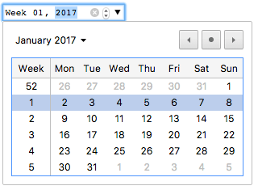

{{HTMLElement("input")}} elements of type week create input fields allowing easy entry of a year plus the ISO 8601 week number during that year (i.e., week 1 to 52 or 53).
The control's user interface varies from browser to browser; cross-browser support is currently a bit limited, with only Chrome/Opera and Microsoft Edge supporting it at this time. In non-supporting browsers, the control degrades gracefully to function identically to <input type="text">.
In Chrome/Opera the week control provides slots to fill in week and year values, a pop-up calendar interface to select them more visually, and an "X" button to clear the control's value.

The Edge week control is somewhat more elaborate, opening up week and year pickers with sliding reels.
| {{anch("Value")}} | A {{domxref("DOMString")}} representing a week and year, or empty |
| Events | {{domxref("HTMLElement/change_event", "change")}} and {{domxref("HTMLElement/input_event", "input")}} |
| Supported common attributes | {{htmlattrxref("autocomplete", "input")}}, {{htmlattrxref("list", "input")}}, {{htmlattrxref("readonly", "input")}}, and {{htmlattrxref("step", "input")}} |
| IDL attributes | value, valueAsDate, valueAsNumber, and list. |
| Methods | {{domxref("HTMLInputElement.select", "select()")}}, {{domxref("HTMLInputElement.stepDown", "stepDown()")}}, and {{domxref("HTMLInputElement.stepUp", "stepUp()")}} |
A {{domxref("DOMString")}} representing the value of the week/year entered into the input. The format of the date and time value used by this input type is described in {{SectionOnPage("/en-US/docs/Web/HTML/Date_and_time_formats", "Format of a valid week string")}}.
You can set a default value for the input by including a value inside the {{htmlattrxref("value", "input")}} attribute, like so:
<label for="week">What week would you like to start?</label> <input id="week" type="week" name="week" value="2017-W01">
{{EmbedLiveSample('Value', 600, 60)}}
One thing to note is that the displayed format may differ from the actual value, which is always formatted yyyy-Www. When the above value is submitted to the server, for example, browsers may display it as Week 01, 2017, but the submitted value will always look like week=2017-W01.
You can also get and set the value in JavaScript using the input element's {{domxref("HTMLInputElement.value", "value")}} property, for example:
var weekControl = document.querySelector('input[type="week"]');
weekControl.value = '2017-W45';
In addition to the attributes common to {{HTMLElement("input")}} elements, week inputs offer the following attributes:
| Attribute | Description |
|---|---|
{{anch("max")}} |
The latest year and week to accept as valid input |
{{anch("min")}} |
The earliest year and week to accept as valid input |
{{anch("readonly")}} |
A Boolean which, if present, indicates that the user cannot edit the field's contents |
{{anch("step")}} |
The stepping interval (the distance between allowed values) to use for both user interface and constraint validation |
maxThe latest (time-wise) year and week number, in the string format discussed in the {{anch("Value")}} section above, to accept. If the {{htmlattrxref("value", "input")}} entered into the element exceeds this, the element fails constraint validation. If the value of the max attribute isn't a valid week string, then the element has no maximum value.
This value must be greater than or equal to the year and week specified by the min attribute.
minThe earliest year and week to accept. If the {{htmlattrxref("value", "input")}} of the element is less than this, the element fails constraint validation. If a value is specified for min that isn't a valid week string, the input has no minimum value.
This value must be less than or equal to the value of the max attribute.
{{page("/en-US/docs/Web/HTML/Element/input/text", "attr-readonly", 0, 1, 2)}}
step{{page("/en-US/docs/Web/HTML/Element/input/number", "step-include")}}
For week inputs, the value of step is given in weeks, with a scaling factor of 604,800,000 (since the underlying numeric value is in milliseconds). The default value of step is 1, indicating 1week. The default stepping base is -259,200,000, which is the beginning of the first week of 1970 ("1970-W01").
At this time, it's unclear what a value of "any" means for step when used with week inputs. This will be updated as soon as that information is determined.
Week inputs sound convenient at first glance, since they provide an easy UI for choosing weeks, and they normalize the data format sent to the server, regardless of the user's browser or locale. However, there are issues with <input type="week"> because browser support is not guaranteed across all browsers.
We'll look at basic and more complex uses of <input type="week">, then offer advice on mitigating the browser support issue later on (see {{anch("Handling browser support")}}).
The simplest use of <input type="week"> involves a basic <input> and {{htmlelement("label")}} element combination, as seen below:
<form> <label for="week">What week would you like to start?</label> <input id="week" type="week" name="week"> </form>
{{EmbedLiveSample('Basic_uses_of_week', 600, 40)}}
<input type="week"> doesn't support form sizing attributes such as {{htmlattrxref("size", "input")}}. You'll have to resort to CSS for sizing needs.
You should be able to use the {{htmlattrxref("step", "input")}} attribute to vary the number of weeks jumped whenever they are incremented or decremented, however it doesn't seem to have any effect on supporting browsers.
By default, <input type="week"> does not apply any validation to entered values. The UI implementations generally don't let you specify anything that isn't a valid week/year, which is helpful, but it's still possible to submit with the field empty, and you might want to restrict the range of choosable weeks.
You can use the {{htmlattrxref("min", "input")}} and {{htmlattrxref("max", "input")}} attributes to restrict the valid weeks that can be chosen by the user. In the following example we are setting a minimum value of Week 01, 2017 and a maximum value of Week 52, 2017:
<form>
<label for="week">What week would you like to start?</label>
<input id="week" type="week" name="week"
min="2017-W01" max="2017-W52">
<span class="validity"></span>
</form>
{{EmbedLiveSample('Setting_maximum_and_minimum_weeks', 600, 40)}}
Here's the CSS used in the above example. Here we make use of the {{cssxref(":valid")}} and {{cssxref(":invalid")}} CSS properties to style the input based on whether or not the current value is valid. We had to put the icons on a {{htmlelement("span")}} next to the input, not on the input itself, because in Chrome the generated content is placed inside the form control, and can't be styled or shown effectively.
div {
margin-bottom: 10px;
position: relative;
}
input[type="number"] {
width: 100px;
}
input + span {
padding-right: 30px;
}
input:invalid+span:after {
position: absolute;
content: '✖';
padding-left: 5px;
}
input:valid+span:after {
position: absolute;
content: '✓';
padding-left: 5px;
}
The result here is that only weeks between W01 and W52 in 2017 will be seen as valid and be selectable in supporting browsers.
In addition you can use the {{htmlattrxref("required", "input")}} attribute to make filling in the week mandatory. As a result, supporting browsers will display an error if you try to submit an empty week field.
Let's look at an example; here we've set minimum and maximum weeks, and also made the field required:
<form>
<div>
<label for="week">What week would you like to start?</label>
<input id="week" type="week" name="week"
min="2017-W01" max="2017-W52" required>
<span class="validity"></span>
</div>
<div>
<input type="submit" value="Submit form">
</div>
</form>
If you try to submit the form with no value, the browser displays an error. Try playing with the example now:
{{EmbedLiveSample('Making_week_values_required', 600, 120)}}
Here's'a screenshot for those of you who aren't using a supporting browser:

Important: HTML form validation is not a substitute for scripts that ensure that the entered data is in the proper format. It's far too easy for someone to make adjustments to the HTML that allow them to bypass the validation, or to remove it entirely. It's also possible for someone to bypass your HTML entirely and submit the data directly to your server. If your server-side code fails to validate the data it receives, disaster could strike when improperly-formatted data is submitted (or data which is too large, of the wrong type, and so forth).
As mentioned above, the major problem with using week inputs right now is browser support: Safari and Firefox don't support it on desktop, and old versions of IE don't support it.
Mobile platforms such as Android and iOS make really good use of such input types, providing specialist UI controls that make it really easy to select values in a touchscreen environment. For example, the week picker on Chrome for Android looks like this:

Non-supporting browsers gracefully degrade to a text input, but this creates problems both in terms of consistency of user interface (the presented control will be different), and data handling.
The second problem is the more serious. As mentioned earlier, with a week input the actual value is always normalized to the format yyyy-Www. When the browser falls back to a generic text input, there's nothing to guide the user toward correctly formatting the input (and it's certainly not intuitive). There are multiple ways in which people could write week values; for example:
Week 1 2017Jan 2-8 20172017-W01The best way to deal with week/years in forms in a cross-browser way at the moment is to get the user to enter the week number and year in separate controls ({{htmlelement("select")}} elements being popular; see below for an example), or use JavaScript libraries such as jQuery date picker.
In this example we create two sets of UI elements for choosing weeks: a native picker created using <input type="week">, and a set of two {{htmlelement("select")}} elements for choosing weeks/years in older browsers that don't support the week input type.
{{EmbedLiveSample('Examples', 600, 140)}}
The HTML looks like so:
<form>
<div class="nativeWeekPicker">
<label for="week">What week would you like to start?</label>
<input id="week" type="week" name="week"
min="2017-W01" max="2018-W52" required>
<span class="validity"></span>
</div>
<p class="fallbackLabel">What week would you like to start?</p>
<div class="fallbackWeekPicker">
<div>
<span>
<label for="week">Week:</label>
<select id="fallbackWeek" name="week">
</select>
</span>
<span>
<label for="year">Year:</label>
<select id="year" name="year">
<option value="2017" selected>2017</option>
<option value="2018">2018</option>
</select>
</span>
</div>
</div>
</form>
The week values are dynamically generated by the JavaScript code below.
div {
margin-bottom: 10px;
position: relative;
}
input[type="number"] {
width: 100px;
}
input + span {
padding-right: 30px;
}
input:invalid+span:after {
position: absolute;
content: '✖';
padding-left: 5px;
}
input:valid+span:after {
position: absolute;
content: '✓';
padding-left: 5px;
}
The other part of the code that may be of interest is the feature detection code. To detect whether the browser supports <input type="week">, we create a new {{htmlelement("input")}} element, try setting its type to week, then immediately check what its type is set to. Non-supporting browsers will return text, because the week type falls back to type text. If <input type="week"> is not supported, we hide the native picker and show the fallback picker UI ({{htmlelement("select")}}s) instead.
// define variables
var nativePicker = document.querySelector('.nativeWeekPicker');
var fallbackPicker = document.querySelector('.fallbackWeekPicker');
var fallbackLabel = document.querySelector('.fallbackLabel');
var yearSelect = document.querySelector('#year');
var weekSelect = document.querySelector('#fallbackWeek');
// hide fallback initially
fallbackPicker.style.display = 'none';
fallbackLabel.style.display = 'none';
// test whether a new date input falls back to a text input or not
var test = document.createElement('input');
try {
test.type = 'week';
} catch (e) {
console.log(e.description);
}
// if it does, run the code inside the if() {} block
if(test.type === 'text') {
// hide the native picker and show the fallback
nativePicker.style.display = 'none';
fallbackPicker.style.display = 'block';
fallbackLabel.style.display = 'block';
// populate the weeks dynamically
populateWeeks();
}
function populateWeeks() {
// Populate the week select with 52 weeks
for(var i = 1; i <= 52; i++) {
var option = document.createElement('option');
option.textContent = (i < 10) ? ("0" + i) : i;
weekSelect.appendChild(option);
}
}
Note: Remember that some years have 53 weeks in them (see Weeks per year)! You'll need to take this into consideration when developing production apps.
{{Specifications}}
{{Compat}}
<input type="datetime-local">, <input type="date">, <input type="time">, and <input type="month">